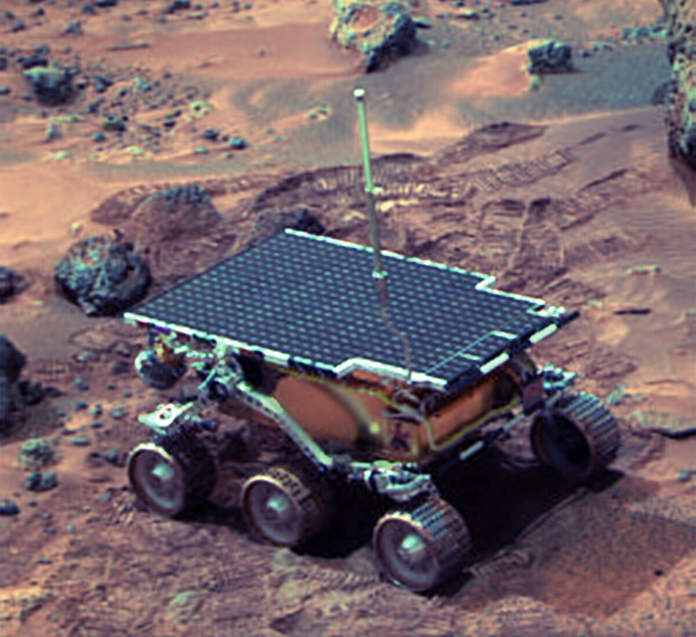
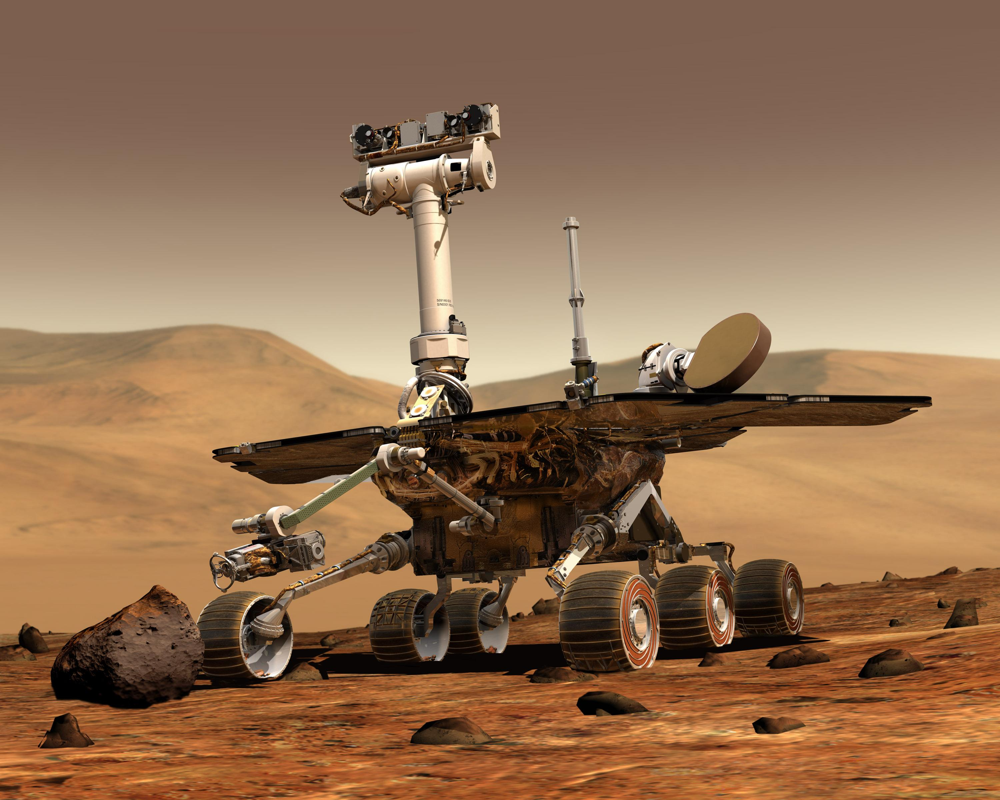
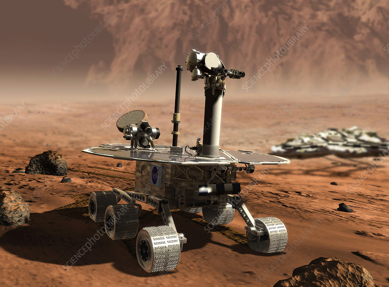
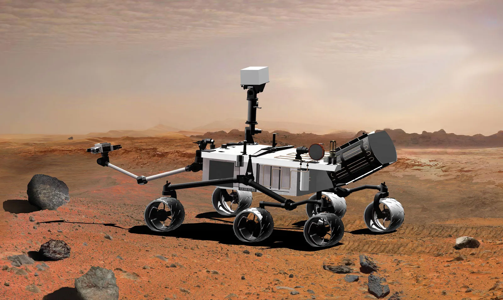
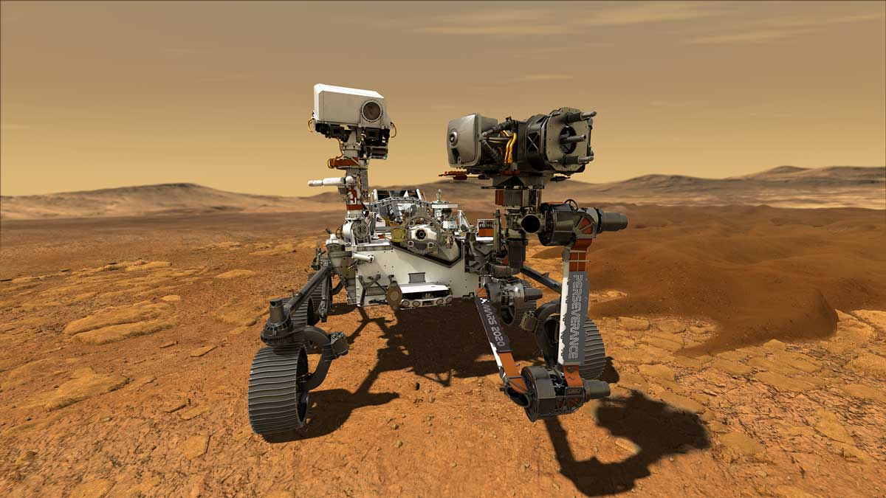

Sojourner
Launch Date: December 4, 1996
- Tested rover technology on Mars.
- Analyzed soil and rocks in Ares Vallis.
- Provided data for future missions.
The Mars Rover Program has launched multiple missions to explore the Red Planet. Each rover aimed to study Mars’ geology, climate, and search for evidence of past life.
| Rover | Launch Date | Landing Date | Mission Duration | Power Source |
|---|---|---|---|---|
| Sojourner | 1996-12-04 | 1997-07-04 | 3 months | Solar |
| Spirit | 2003-06-10 | 2004-01-04 | 6 years | Solar |
| Opportunity | 2003-07-07 | 2004-01-25 | 15 years | Solar |
| Curiosity | 2011-11-26 | 2012-08-06 | Ongoing | RTG |
| Perseverance | 2020-07-30 | 2021-02-18 | Ongoing | RTG |

Launch Date: December 4, 1996

Launch Date: June 10, 2003

Launch Date: July 7, 2003

Launch Date: November 26, 2011

Launch Date: July 30, 2020